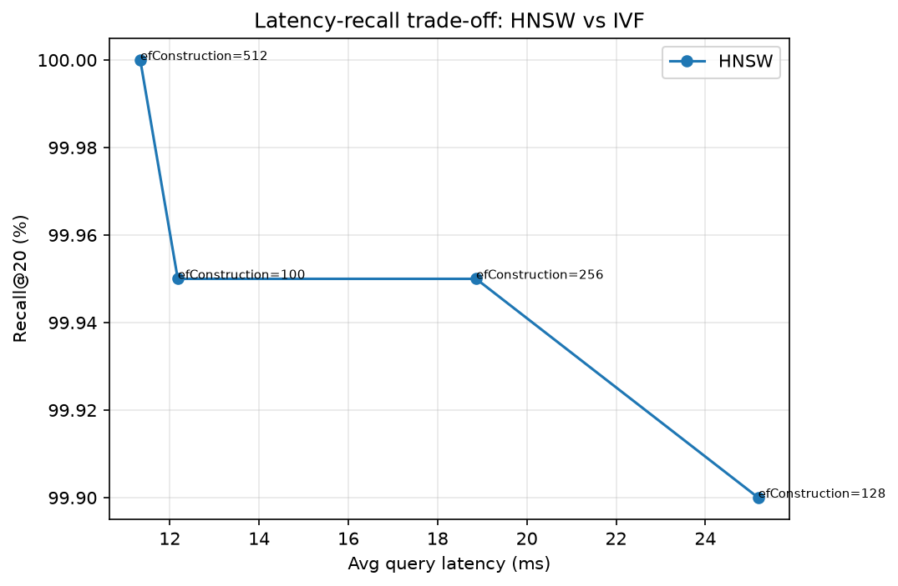

NoSQL Labs Portfolio
Twelve hands-on projects covering MongoDB schema design, replication, transactions, sharding, security, monitoring, backup & recovery, multi-tenancy, polyglot persistence, vector search/RAG and a three-database comparison, anchored by a Cyber Threat Intelligence platform.
All projects
Cyber Threat Intelligence Platform
Labs 7.1 & 7.2 · Flask + MongoDB + vanilla JS dashboard
A dashboard over real CISA Known Exploited Vulnerabilities (KEV) data plus an index of annual security reports, with schema analysis, a 100,000-document working-set test and WiredTiger cache monitoring. Later labs (9–15) were integrated into this same app as blueprints (lab9, lab10, lab12, lab13, lab14_1, lab15).
Architecture
- Backend: Flask
app.py, ingestersingest_cisa.py,ingest_reports.py - Frontend:
index.html,app.js,style.css - Tools: schema_analysis, working_set_test, cache_monitor, random_reads, backup_cti
- Packaging: Dockerfile, index script, env example
API
GET /api/health GET /api/threats?q=&category=&page=&limit= GET /api/threats/<CVE-ID> GET /api/reports?q= GET /api/metrics/schema | /cache POST /api/sync/cisa | /api/sync/reports
Lab 7.1 — BSON size by collection
| Collection | Docs | Avg B | Max B |
|---|---|---|---|
| threats | 1,746 | 1,180 | 2,682 |
| reports | 564 | 351 | 454 |
| sources | 2 | 311 | 312 |
No document is anywhere near the 16 MiB limit.
Embedding vs referencing (500 iterations)
Embedding reads ~41% faster but the document grows (2,316 vs 2,036 bytes) and publisher updates get harder.
Lab 7.2 — Working set
- 100,000 synthetic ~2 KB docs, kept separate from real data
- Max WiredTiger cache ≈ 12.2 GB, in use ≈ 230 MB → 1.89% utilisation
- Estimated interval hit ratio: 1.0 (estimate from counter deltas)
Lab 8 — Replica Set with Arbiter
MongoDB 7.0 · Docker Compose
- Three data-bearing members (ports 27017–27019) plus one arbiter, replica set
rs0 - Scripts:
import_cti_to_lab8.pyloads CTI data;lab8_2_monitor.pyreports member roles
Evidence captured
mongo1 : PRIMARY mongo2 : SECONDARY mongo3 : SECONDARY arbiter: ARBITER
Replication test document written and verified; failover and monitoring tests saved under evidence/.
Lab 9 — Write Concern Latency
PyMongo 4.17 · replica set rs0 · 1,000 individual inserts per setting
- MongoDB has no literal
w:all;w:3is used, excluding the arbiter. - Stronger acknowledgement costs more latency; results vary with hardware and load.
- Delivered as a benchmark service, Flask routes and timestamped JSON reports.
Lab 10 — Multi-Document Transactions
Bank transfer and inventory reservation
10.1 Bank transfer — 3/3 PASS
- Successful transfer ACC001 → ACC002 (100)
- Insufficient funds rolls back
- Forced rollback after debit leaves balances intact
10.2 Inventory — 4/4 PASS
100 reservation requests, stock 5 protected under 8 concurrent clients. Throughput (req/s):
| Threads | Transactional | Atomic update |
|---|---|---|
| 1 | 121 | 187 |
| 4 | 102 | 514 |
| 8 | 91 | 751 |
| 16 | 87 | 749 |
Transactions slow down under contention; single-document atomic operators scale up.
Lab 11 — Sharded Cluster & Hotspot Detection
Config server + 2 shards + mongos
10,000 documents, two shard keys
| Shard key | shard1 | shard2 |
|---|---|---|
| Timestamp (hotspot) | 0 | 10,000 |
| Hashed (even) | 5,081 | 4,919 |
- A monotonically increasing key sends every insert to one shard.
- A hashed key balances writes ~51/49.
- Trade-off: timestamp range query targeted a single shard (7 ms); hashed keys scatter range queries.
Lab 12 — TLS & Role-Based Access Control
MongoDB with requireTLS, client certificates and least-privilege users
- Private CA, server and client certificates generated with OpenSSL
mongod --auth --tlsMode requireTLS, bound to localhostsetup_lab12_rbac.pycreates reader and writer roles
Verification scripts
test_tls.py— TLS handshaketest_no_client_cert.py— connection without cert is rejectedtest_reader_writer.py— reader only sees the salary-freeemployees_safeview and cannot access the base collection or delete
Lab 13 — Monitoring & Kubernetes
Docker Compose and StatefulSet deployments
Docker stack
- 3-node replica set with keyFile auth
- Keyfile init container
- Percona
mongodb_exporter0.47.2 - Prometheus v3.5.0, 15 s scrape
Kubernetes
mongo-statefulset.yaml: 3 replicas, init container for keyfilemongo-headless.yaml: headless service for stable DNS- Namespace
lab13
Lab 14 — Monitoring Service & Backup / Recovery
14.1 Flask monitoring · 14.2 mongodump/mongorestore
14.2 Backup and restore benchmark
| Docs | Backup s | Restore s | Size |
|---|---|---|---|
| 1,000 | 0.09 | 0.16 | 466 KB |
| 10,000 | 0.20 | 0.88 | 4.6 MB |
| 100,000 | 1.53 | 8.24 | 45.9 MB |
- Hourly backup PowerShell script with log (RPO target 60 min)
- Measured components of recovery ≈ 3 s; end-to-end RTO not formally verified
- 14.1 adds a cache hit-ratio monitor, routes and a dashboard tab to the CTI app
Lab 15 — Multi-Tenancy
15.1 FastAPI tenant API · 15.2 isolation-strategy migration
15.1 Multi-tenant task API
- FastAPI, JWT, Argon2, pytest — 4 passed
- All queries scoped by
tenant_id; cross-tenant access returns 404 - Rate limit: 100 req / 60 s per tenant in MongoDB with a TTL index; request 101 → 429
POST /auth/register /auth/login GET /auth/me
POST/GET /tasks GET/PUT/DELETE /tasks/{id}15.2 Document-level vs collection-per-tenant
5 tenants · 500 tasks · average ms
| Operation | Doc-level | Per-tenant |
|---|---|---|
| List tasks | 3.26 | 2.87 |
| Create task | 3.30 | 3.20 |
| Cross-tenant analytics | 3.42 | 11.65 |
Migration via $match+$out: 500/500 documents, zero leakage. Recommendation: start document-level; split by tenant when backup, restore or regulation requires it.
Lab 16 — Three Database Models & FraudQueryService
MongoDB · Cassandra · Neo4j
16.1 University enrolment
Same domain modelled three ways: embedded roster documents, query-first Cassandra tables (written twice), and a Student-ENROLLED_IN-Course graph, with equivalent queries compared side by side.
16.2 FraudQueryService
| Method | Backend |
|---|---|
| get_transaction | MongoDB |
| get_user_profile | Cassandra |
| detect_fraud_rings | Neo4j |
| analyze_transaction | all three |
Connection pooling and a per-backend circuit breaker (3 failures → open, 30 s retry). Unit tests run without live databases.
Lab 17 — RAG & Vector Index Comparison
Atlas Vector Search · Voyage embeddings · Claude
17.1 RAG with memory
- Threat-intel docs → 100-word chunks (20 overlap) → embeddings →
$vectorSearchtop 3 - Conversation memory: last 5 exchanges per user
17.2 Index benchmark (measured)
| Index | Params | Build s | ms | Recall |
|---|---|---|---|---|
| HNSW | efC 100 | 7.7 | 33.8 | 100% |
| HNSW | efC 128 | 5.2 | 15.1 | 100% |
| HNSW | efC 256 | 4.2 | 18.1 | 100% |
| HNSW | efC 512 | 6.4 | 12.1 | 100% |
| FLAT | exact | 3.1 | 12.4 | 100% |
Latency vs recall chart

Lab 18 — MongoDB vs Cassandra vs Neo4j
100,000 synthetic threat events · single-node Docker · median of 10 runs
Query latency (ms, lower is better)
| Query | Mongo | Cass. | Neo4j |
|---|---|---|---|
| Q1 indicator history | 1.94 | 4.29 | 15.71 |
| Q2 target & spread | 6.72 | 24.76 | 14.11 |
| Q3 daily volume | 44.17 | 18.25 | 76.97 |
| Q4 insert 1,000 | 31.6 | 1102* | 123.7 |
*Pure-Python Cassandra driver, single node — not its real ceiling.
Activity 18.1 — community detection
- Neo4j GDS Louvain over a co-targeting graph (19,503 edges)
- 25/25 planted campaigns recovered, purity 1.0
- Flagged communities: average transaction ≈ $630–712 vs $329.52 overall (pulled from MongoDB)